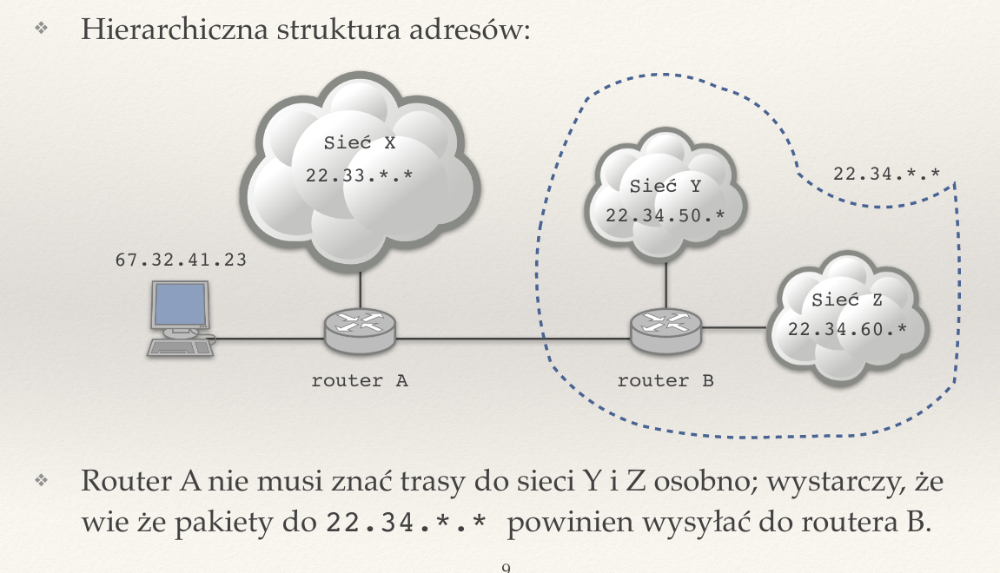
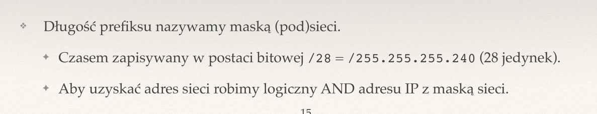
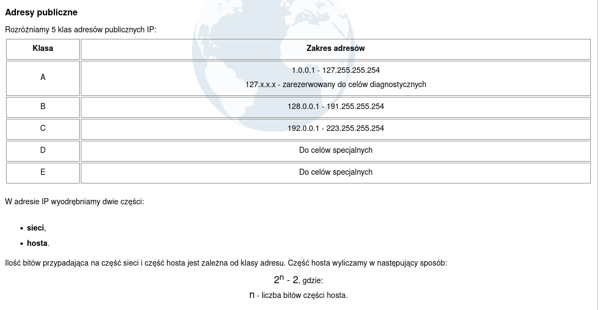
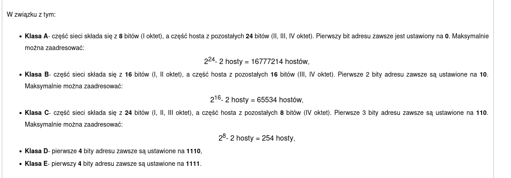
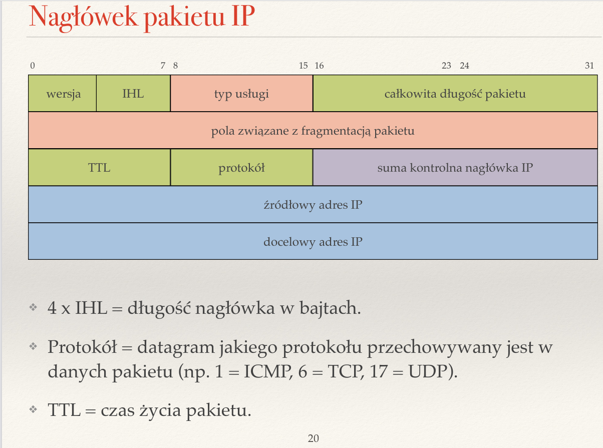
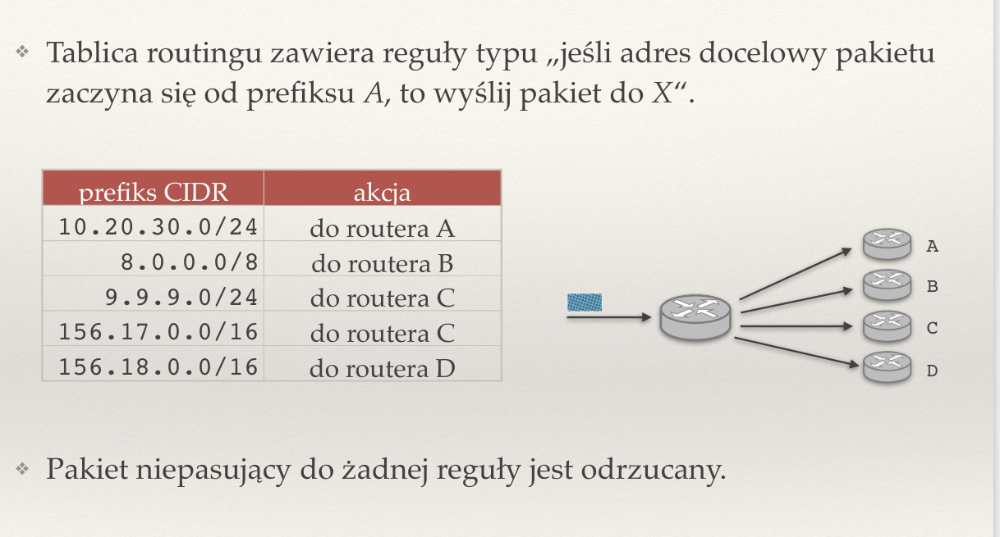
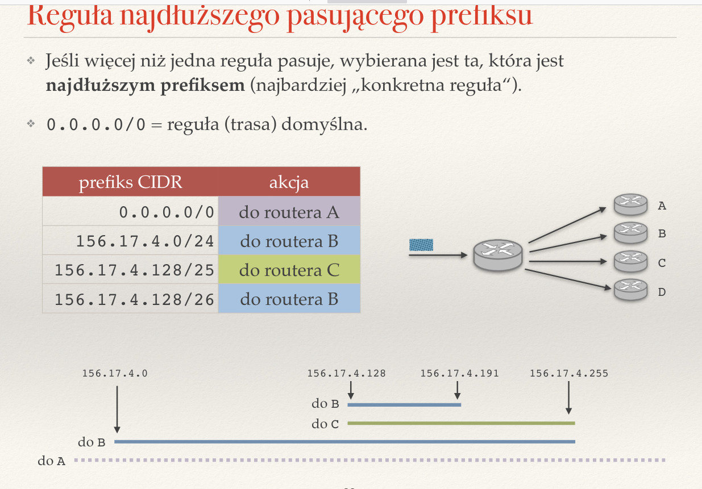

Created Tuesday 21 June 2022
Zagadnienia
❖ Z czego wynika hierarchia adresów IP? Jaki ma wpływ na konstrukcję tablic routingu?
Hierarchizowanie adresów IP wynika z potrzeby uproszczenia trasowania pakietów w ruchu sieciowym. Adresy IP są dzielone na dzielone na sieci, w których znajdują się adresy IP tylko z określonego przedziału. Dana sieć może zostać następnie podzielona na jeszcze mniejsza podsieci, zawierajace odpowiednio mniej adresów. Taki hierarchiczny podział pozwala routerom na przechowywanie mniejszych tablic routingu, ponieważ dany router nie musi pamiętać trasy do każdego adresu IP w jego sieci, ale wystarczy, by pamiętał drogę do routerów, które odpowiadają za jego podsieci. Może wysłać pakiet do jednego z nich, a ten będzie mógł przesłać pakiet odpowiednio dalej, w obrębie swojej mniejszej sieci.

❖ Notacja CIDR.
CIDR (Classless Inter-Domain Routing) — opisuje zakres adresów IP o wspólnym prefiksie za pomocą pary (pierwszy adres z zakresu, długość prefiksu), np.
/pasted_image001.png)
❖ Co to jest adres rozgłoszeniowy?
Adres rozgłoszeniowy to specjalny adres w obrębie sieci (ostatni adres z sieci), który służy do rozsyłania pakietów do wszystkich innych adresów z danego zakresu, tj. jeśli pakiet zostanie wysłany pod adres broadcast, wtedy trafi do każdego innego adresu z sieci.
❖ Co to jest maska podsieci
Maska podsieci to długość prefiksu adresów z danego zakresu. Jest 32-bitową liczbą, która określa, ile bitów adresu IP opisuje adres sieci, a ile adres hosta.

❖ Opisz sieci IP klasy A, B i C.
Ze względów historycznych wydziela się klasy adresów IP (obecnie raczej nie), opisujące różne zakresy adresów:
- Klasa A — adresy rozpoczynające się od 0 o masce /8.
- Klasa B — adresy rozpoczynające się od 10 o masce /16.
- Klasa C — adresy rozpoczynające się od 110 o masce /24.
https://sieci.infopl.info/index.php/adresowanie/klasyip


❖ Co to jest pętla lokalna (loopback)?
Jest to specjalna sieć 127.0.0.0/8, służąca do celów testowych. Połączenie się z dowolnym adresem z tej sieci sprawia, że łączymy się z lokalnym komputerem (z samym sobą).
❖ Do czego służy pole TTL w pakiecie IP? Do czego służy pole protokół?
TTL (Time To Live) — pole, określające jak długo (przez ile adresów pośrednich) ma żyć dany pakiet, zanim zostanie odrzucony.
Protokół to pole w nagłówku IP, które określa jakiego protokołu datagram jest przechowywany w danych pakietu, np. 1 - ICMP, 6 - TCP, 17 - UDP).

❖ Jakie reguły zawierają tablice routingu?
Są to reguły dotyczące przypisywania adresów routerów, do których zostanie przekierowany pakiet, na podstawie prefiksu docelowego adresu IP.

❖ Na czym polega reguła najdłuższego pasującego prefiksu?
W niektórych przypadkach adres moze dopasować się do kilku różnych reguł (prefiksów). W tym wypadku wybierany jest najdłuższy prefiks, czyli najbardziej szczegółowa reguła.

❖ Co to jest trasa domyślna?
Jest to trasa, którą router przypisuje pakietom, których adres docelowy nie dopasował się do żadnej reguły w jego tablicy routingu. Można powiedzieć, że to najbardziej ogólna reguła, do której dopasowuje się każdy adres, tj. 0.0.0.0/0.
❖ Do czego służy protokół ICMP? Jakie znasz typy komunikatów ICMP?
Protokół ICMP (Internet Control Message Protocol — protokół, odpowiadający za wsparcie diagnostyczne w urządzeniach sieciowych. Za jego pomocą wysyłane są informacje o błędach, niepowodzeniach i sukcesach w komunikacji, itd. Jest to protokół o tyle nietypowy, że nie jest stosowany do przesyłu danych. Obsługuje kilkadziesiąt typów wiadomości kontrolnych, którym przypisuje odpowiedni kod numeryczny, np.
- 0 — Echo Reply
- 3 — Destination Unreachable
- 5 — Redirect Message
- 8 - Echo Request
- 10 — Router Solicitation
- 11 — Time Exceeded
Korzystają z niego między innymi polecenia ping oraz traceroute.
❖ Jak działa polecenie ping?
Polecenie ping działa w sposób podobny do sonara — wysyła pakiet ICMP Echo Request do odbiorcy i czeka, aż otrzyma w odpowiedzi pakiet ICMP Echo Reply. Zwraca informację o round trip time (❖ Co to jest BDP? Co to jest czas propagacji?), utraconych pakietach i pe informacje statystyczne.
ne.
❖ Jak działa polecenie traceroute
Polecenie traceroute wykorzystuje wartość TTL pakietu (❖ Do czego służy pole TTL w pakiecie IP? Do czego służy pole protokół?) do badania trasy, jaką przebywają pakiety między dwoma urządzeniami końcowymi. Zaczyna od wysłania pakietu ICMP Echo Request do adresu docelowego z TTL=1. Po dotarciu do sąsiedniego routera jego TTL zostanie zmniejszony o 1 i spadnie do 0, a router odeśle nadawcy wiadomość ICMP Time Exceeded. Nadawca zapamięta adres IP routera, który wysłał mu informację o niepowodzeniu i spróbuje wysłać ICMP Echo Request z TTL=2. Będzie powtarzał tę sekwencję do momentu, aż dotrze do adresu docelowego i otrzyma od niego pakiet ICMP Echo Reply. Wtedy pamięta już listę wszystkich routerów, jaki minął na trasie między tymi dwiema maszynami.
❖ Dlaczego do tworzenia gniazd surowych wymagane są uprawnienia administratora?
Gniazda surowe umożliwiają użytkownikowi wysłanie i odbieranie dowolnych pakietów, co może stanowić poważne zagrożenie dla bezpieczeństwa. Surowe gniazda nie znają pojęcia portu, więc mogą odbierać wszystkie pakiety, jakie przychodzą do komputera, nawet te, które przychodzą do innych użytkowników.
https://squidarth.com/networking/systems/rc/2018/05/28/using-raw-sockets.html
❖ Co to jest sieciowa kolejność bajtów?
W sieci korzysta się z innej notacji liczbowej niz w popularnych architekturach komputerowych (big endian zamiast little endian). Notację big endian nazywamy sieciową kolejnością bajtów — od lewej piszemy najstarsze bajty.
❖ Co robią funkcje socket(), recvfrom() i sendto()?
socket() — tworzy punkt końcowy w komunikacji, tj. miejsce, z którym może się łączyć inna maszyna, by skomunikować się z naszym komputerem, a następnie zwraca deskryptor pliku, który odnosi się do tego punktu końcowego.
recvfrom() — odbiera wiadomość z danego gniazda, czytając z deskryptora pliku. Bardzo przypomina read(), z tą różnicą, że przyjmuje jago argument flagi. Odczytane dane zapisuje do wskazanego bufora. Zwraca liczbę odebranych bajtów.
sendto() — wysyła przekazaną w argumencie wiadomość do danego gniazda, a następnie zwraca liczbę przesłanych bajtów.
❖ Jaki informacje zawiera struktura adresowa sockaddr_in?
struct sockaddr_in {
short int sin_family;
unsigned short int sin_port;
struct in_addr sin_addr;
unsigned char sin_zero[8];
};
/pasted_image009.png)
❖ Co to jest tryb blokujący i nieblokujący? Co to jest aktywne czekanie?
Tryb blokujący i nieblokujący — różne metody obsługi I/O. W trybie blokującym dane są odczytywane tylko wtedy, gdy faktycznie jest coś do odczytania, np. w przypadku odczytu z pustego gniazda serwer będzie czekał i nie robił nic innego poza tym, dopóki w gnieździe nie pojawią się dane do odczytu. W przypadku trybu nieblokującego jest inaczej — operacja odczytu i zapisu jest wykonywana natychmiastowo. Jeśli spróbujemy odczytać coś z pustego gniazda otrzymamy kod błędu EAGAIN albo EWOULDBLOCK. W przypadku trybu nieblokującego system operacyjny nie sprawdzi za nas, kiedy będziemy mieli co odczytać z gniazda i musimy sprawdzać to sami. Najprostszy sposób to aktywne czekanie, jednak ta opcja wiąże się z marnowaniem czasu procesora. Dużo lepszym wyborem jest użycie funkcji select() lub poll().
Aktywne czekanie — nieustanne sprawdzanie, czy nie nastąpiły jakieś zmiany w stanie systemu. Jest to najczęściej niepożądane zachowanie, ponieważ prowadzi do marnowania mocy obliczeniowej procesora na robienie niczego — czekanie.
❖ Jakie jest działanie funkcji select()?
select() pozwala programowi na monitorowanie stanu deskryptorów plików. Informuje ona program, że deskryptor jest gotowy do wykonania na nim operacji I/O, a sam program może w tym czasie wykonywać inne zadania, unikając w ten sposób aktywnego czekania. Użytkownik ustala maksymalny czas, przez jaki select() będzie czekał na zmianę stanu deskryptora (timeout).
/pasted_image.png){kind=link}
/pasted_image002.png){kind=link}
/pasted_image003.png){kind=link}
/pasted_image004.png){kind=link}
/pasted_image005.png){kind=link}
/pasted_image006.png){kind=link}
/pasted_image007.png){kind=link}
/pasted_image008.png){kind=link}
/pasted_image010.png){kind=link}